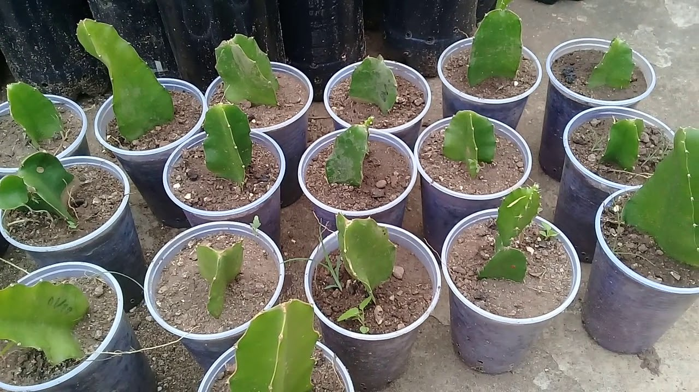
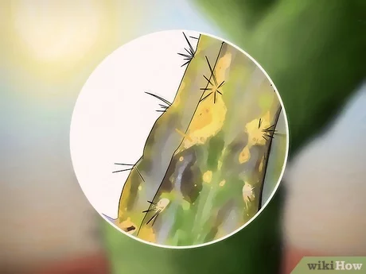
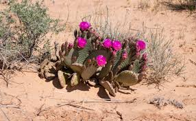
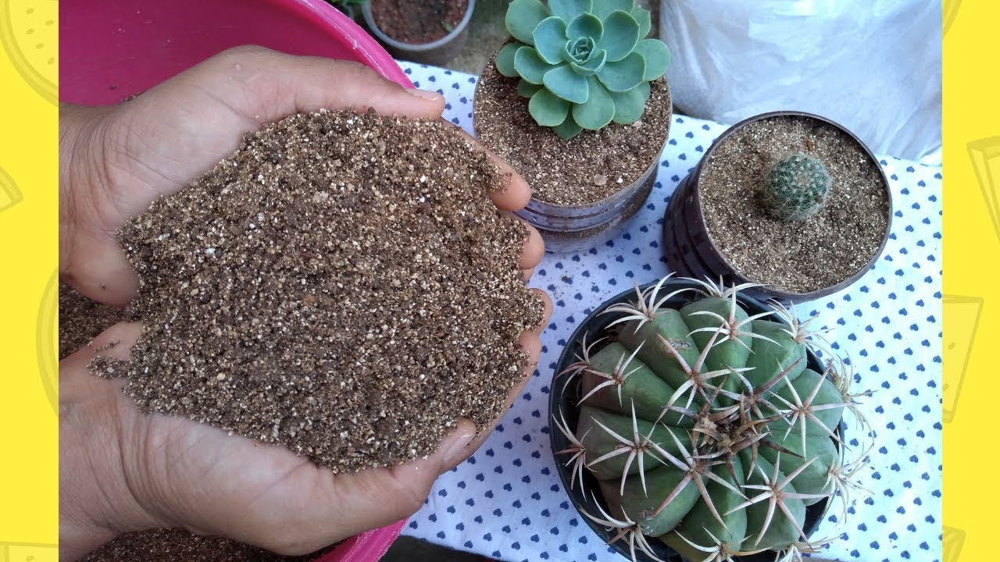
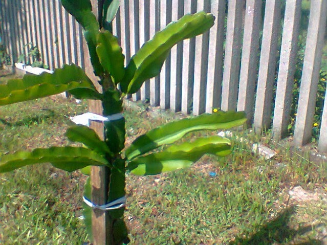
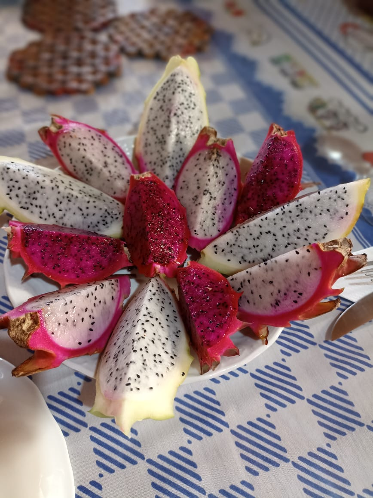
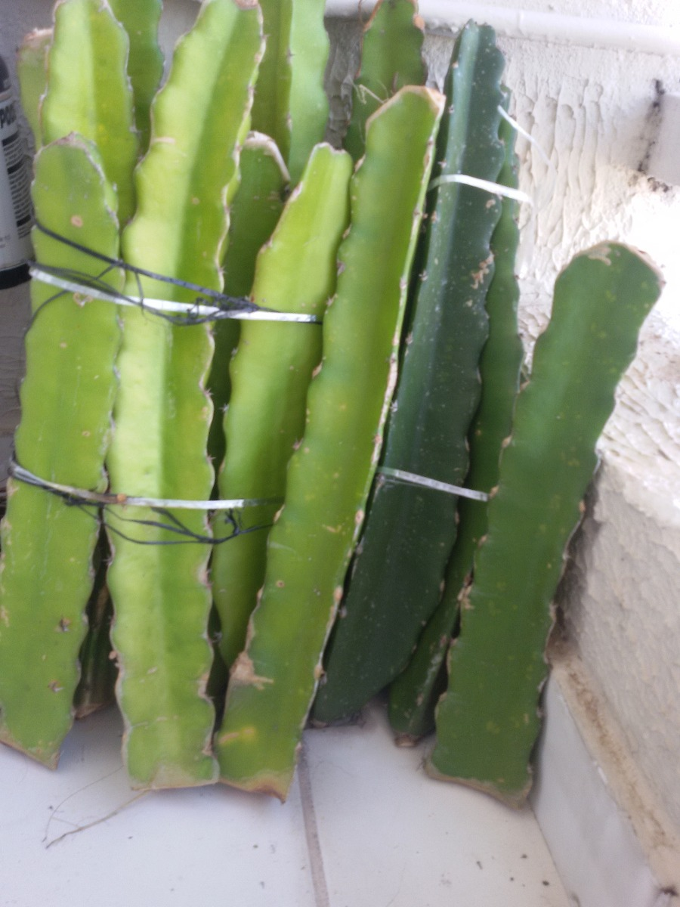

Conheça nossos sabores deliciosos!


Benefícios da Pitaya
-
A pitaya contém antioxidantes que ajudam a combater os danos causados pelos radicais livres no organismo.
-
Os nutrientes presentes na pitaya contribuem para fortalecer o sistema imunológico, ajudando a prevenir doenças.
-
As fibras presentes na pitaya auxiliam na digestão e ajudam a manter um sistema digestivo saudável.
-
A pitaya possui baixo índice glicêmico, o que ajuda a regular os níveis de açúcar no sangue.
-
Os antioxidantes e as fibras presentes na pitaya ajudam a manter o coração saudável e reduzem o risco de doenças cardíacas.
-
Os nutrientes e antioxidantes da pitaya contribuem para uma pele mais saudável e radiante.
-
A pitaya é uma fruta de baixa caloria e rica em fibras, o que a torna uma aliada na perda de peso e na sensação de saciedade.
-
As fibras presentes na pitaya ajudam a regular o trânsito intestinal, prevenindo a constipação.
-
A pitaya possui compostos que têm propriedades anti-inflamatórias, auxiliando na redução de inflamações no organismo.
-
A pitaya é composta por uma alta porcentagem de água, o que a torna uma ótima opção para manter o corpo hidratado.
Produtores
Como plantar sua muda, passo a passo
Plantando uma Muda de Pitaya: Passo a Passo
Passo 1: Escolha da Muda
- Selecione uma muda saudável de pitaya de um viveiro confiável ou adquira de um produtor de confiança como A Casa da Pitaya
- Verifique se a muda possui cores fortes e solidas, sem machas ou pigmentações irregulares.
 Passo 2: Preparação do Solo
- Escolha um local adequado para o plantio da pitaya, lembrando que a pitaya é um cacto. Ela prefere sol pleno e um solo bem drenado.
- Prepare o solo removendo qualquer tipo de entulho, pedras ou raízes de outras plantas.
- Faça uma cova ou utilize um vaso com aproximadamente 50 cm de profundidade e 50 cm de largura.
Passo 3: Adubação e Correção do Solo
- Acrescente matéria orgânica, como composto orgânico ou esterco bem curtido, à terra retirada da cova.
- Misture bem para melhorar a estrutura do solo e fornecer nutrientes.
- Se necessário, faça correção de pH utilizando calcário dolomítico.
Passo 4: Plantio da Muda
- Coloque a muda de pitaya na cova, tomando cuidado para posicionar as raízes de forma adequada e alinhada.
- Certifique-se de que o colo da planta (região entre as raízes e o caule) esteja nivelado com o solo.

Passo 5: Preenchimento e Compactação do Solo
- Preencha a cova com a mistura de solo e matéria orgânica, pressionando levemente ao redor da muda para firmar o solo.
- Evite compactar o solo em excesso para permitir a aeração adequada das raízes.
Passo 6: Irrigação
- Após o plantio, faça uma irrigação generosa para assegurar que o solo esteja bem umedecido ao redor da muda.
- Mantenha o solo levemente úmido nos primeiros meses, evitando encharcamento.
- a frequência de rega pode variar dependendo das condições específicas, como o clima e o tipo de solo.
- Após o enraizamento inicial, a pitaya é uma planta resistente à seca e pode tolerar períodos de estresse hídrico. Portanto, é melhor permitir que o solo seque um pouco entre as regas. A frequência de rega pode ser reduzida para uma ou duas vezes por semana, dependendo das condições ambientais.
Passo 7: Suporte e Amarração
- Caso a muda precise de suporte, posicione uma estaca resistente ao lado da planta e amarre-a delicadamente, sem apertar muito.
- O suporte auxiliará no direcionamento do crescimento da pitaya.
Passo 8: Cuidados Gerais
- Proteja a muda de pitaya contra ventos fortes, que podem danificar os brotos frágeis.
- Realize a adubação regularmente, seguindo as recomendações.
- Monitore a planta quanto a pragas e doenças, agindo de forma preventiva ou buscando orientação técnica se necessário.
Quando colher os frutos
A pitaya, também conhecida como fruta do dragão, é uma fruta exótica que é cultivada por seus saborosos frutos. A colheita adequada dos frutos da pitaya é essencial para desfrutar deles no auge de sua doçura e qualidade. A maturação dos frutos pode variar ligeiramente dependendo da variedade cultivada e das condições de crescimento, mas existem algumas indicações gerais para determinar o momento ideal de colheita:
Passo 1: Observação visual
- As pitayas geralmente passam por uma mudança de cor durante a maturação. Dependendo da variedade, a cor do fruto pode variar de verde para tons de rosa, vermelho ou amarelo.
- Um indicador comum de que a pitaya está madura é a mudança de cor para um tom mais vibrante e a pele tornando-se mais brilhante. Observe a cor do fruto e procure por uma tonalidade intensa e atraente antes de colhê-lo.
Passo 2: Textura da pele
- ém da cor, a textura da pele da pitaya também pode fornecer pistas sobre sua maturação. A fruta madura deve ter uma pele ligeiramente macia ao toque, mas ainda firme.
- Evite colher pitayas com a pele muito dura, pois elas podem não ter alcançado sua doçura máxima.
Passo 3: Aroma
- O aroma da pitaya também pode ser um indicador de maturação. Frutos maduros tendem a ter um aroma doce e agradável.
- Se você sentir um cheiro suave e adocicado vindo da fruta, é provável que esteja no momento certo para a colheita.
Passo 4: Facilidade de remoção
- Ao colher as pitayas, tente girar levemente o fruto. Se ele se soltar facilmente da planta, é um sinal de que está pronto para ser colhido.
- Evite colher os frutos com muita força, pois isso pode danificar a planta ou os outros frutos ainda em crescimento.
Observação 1:
- É importante ressaltar que a pitaya é melhor colhida quando está completamente madura, pois não amadurece mais após ser colhida. Se você colher a fruta antes de sua maturação completa, ela pode não desenvolver todo o seu sabor e doçura.
Observação 2:
- Ao colher os frutos da pitaya, utilize tesouras de poda limpas para evitar danos à planta e aos outros frutos. Após a colheita, os frutos podem ser armazenados em local fresco por alguns dias ou consumidos imediatamente para desfrutar de sua frescura e sabor.
Observação 3:
- Observar essas indicações gerais ajudará a determinar o momento ideal de colheita da pitaya, permitindo que você desfrute de frutos suculentos e saborosos em sua plenitude.
Como enviamos suas mudas
Passo 1:
- Realizado a escolha da muda ideal de acordo com o pedido realizado.
Passo 2:
- Fizemos sua embalagem em voltar de papel e colocamos em uma caixa selada.
Passo 3:
- Enviamos pelo correio com todas garantias possíveis.